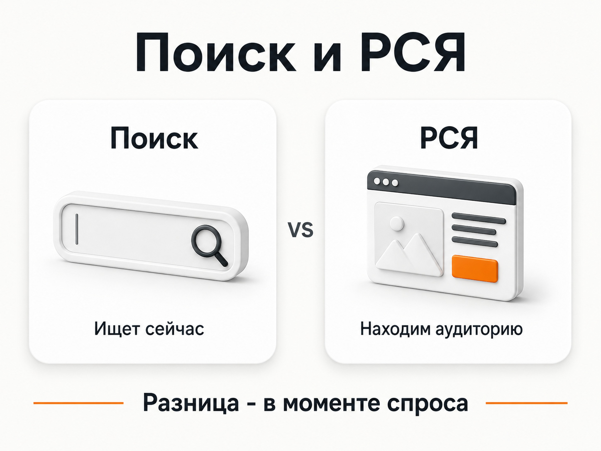
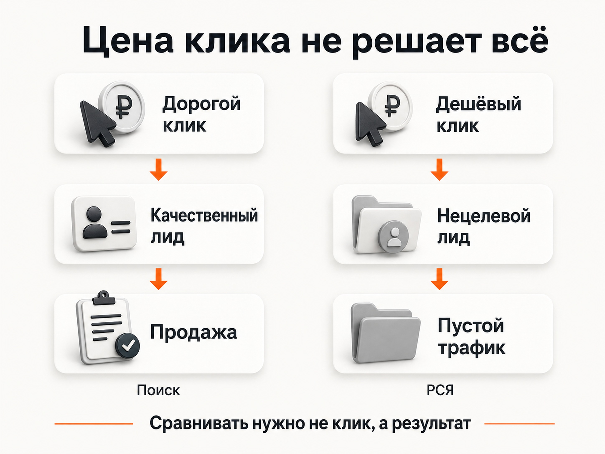
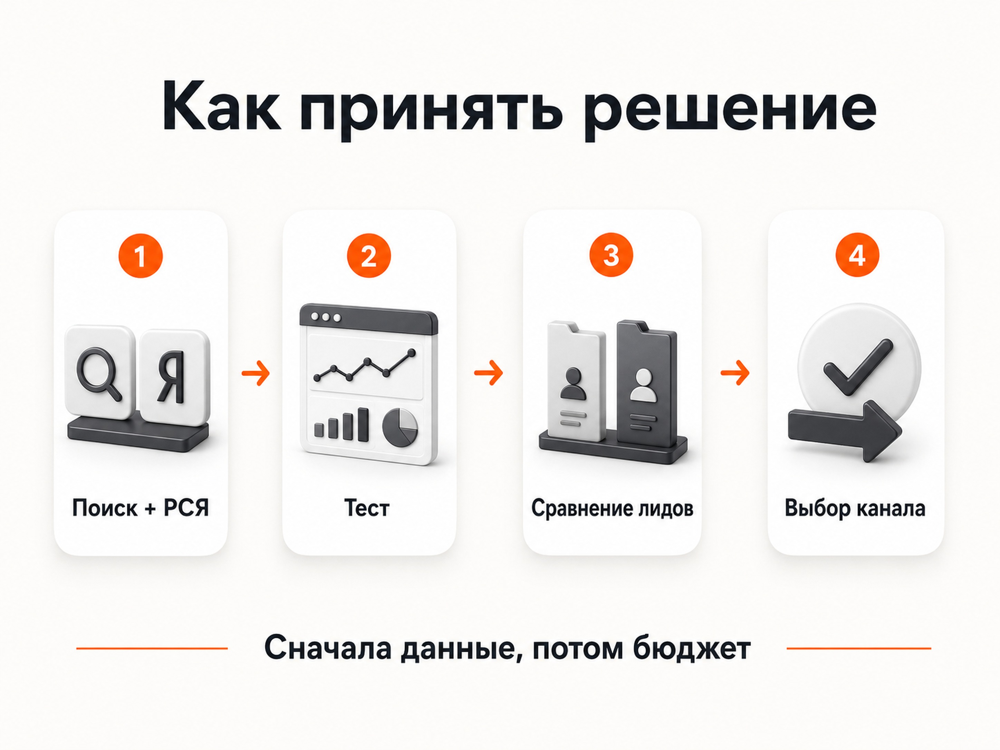

Блог о платном трафике
Поиск или РСЯ: что выбрать в Яндекс Директе
Если отвечать коротко, поиск лучше работает там, где человек уже осознал потребность и прямо сейчас ищет товар или услугу. РСЯ позволяет работать шире: находить потенциальных клиентов за пределами поисковой выдачи, возвращать посетителей сайта и получать дополнительный объём там, где прямых запросов недостаточно.
Но правила «поиск всегда качественнее» или «в РСЯ лиды дешевле» не существует. Я встречал проекты, где почти весь результат приносил поиск, и проекты, где основной объём заявок давали именно сети.
Поэтому для большинства бизнесов я бы не пытался заранее выбрать один вариант. Если экономика позволяет провести нормальный тест, логичнее проверить оба источника и уже по фактическим заявкам решить, куда направлять бюджет.
В чём главное отличие поиска от РСЯ
Разница прежде всего в моменте контакта с человеком.
На поиске пользователь сам вводит запрос. Например:
- заказать эвакуатор;
- доставка пиццы;
- вскрытие замков;
- купить промышленный компрессор;
- юридическое сопровождение бизнеса.
Потребность уже существует. Задача рекламы - оказаться перед человеком в момент выбора.
Яндекс описывает поисковое размещение именно так: объявление появляется, когда пользователь ищет соответствующий товар или услугу.
В РСЯ ситуация другая. Объявление может появиться на сайте, в приложении или другом сервисе, когда человек в данный момент ничего не ищет. Для подбора аудитории Яндекс использует интересы, поведение, тематику и другие доступные сигналы.
Что такое РСЯ в Яндекс Директ и как она работает
Если сильно упростить:
| Критерий | Поиск | РСЯ |
|---|---|---|
| Спрос | Уже сформирован | Может быть менее сформирован |
| Момент контакта | Человек сам ищет решение | Реклама сама находит аудиторию |
| Объём | Ограничен поисковым спросом | Потенциально значительно шире |
| Цена клика | Часто выше в конкурентных нишах | Может быть заметно ниже |
| Цена лида | Зависит от конверсии и качества трафика | Зависит от аудитории, площадок, оффера и сайта |
| Скорость первых результатов | Может быть высокой при активном спросе | Сильнее зависит от обучения и качества аудитории |
| Основной риск | Дорогой аукцион | Нецелевой или менее готовый к покупке трафик |

Когда поиск лучше РСЯ
Самый очевидный сценарий - срочная потребность.
Представьте человека, у которого ночью сломалась машина на дороге. Ему нужен эвакуатор сейчас. Он не будет ждать, пока где-нибудь через несколько часов ему покажется красивый баннер.
Он открывает поиск и вводит «эвакуатор рядом» или похожий запрос.
Та же логика работает с аварийным вскрытием замков, срочным ремонтом, доставкой еды и другими услугами, где между возникновением потребности и покупкой проходит минимум времени.
В таких нишах поиск может быть главным источником клиентов даже при очень дорогих переходах. В моей практике в перегретых поисковых аукционах отдельные клики могут стоить несколько тысяч рублей. Эвакуаторы и срочное вскрытие замков как раз относятся к типичным примерам таких направлений.
Высокий CPC сам по себе ещё не означает, что реклама невыгодна. Переход за 1000 рублей может оказаться лучше перехода за 100 рублей, если первый приводит клиента, а второй заканчивается просмотром страницы.
Цена за клик в Яндекс Директе: что это и как управлять CPC
Поиск особенно логичен, когда потребность возникает в конкретный момент
Причём срочность не обязательно измеряется минутами.
Есть услуги, которые человек заказывает спокойно, но потребность всё равно возникает только после определённого события.
Хороший пример из моей практики - юридический консалтинг. Компания оказывает узкие услуги, связанные с Федресурсом, регистрационными процедурами, Роскомнадзором, КИИ и другими обязательными задачами бизнеса.
Около 99% обращений в этом проекте приходило именно с поиска. Баннерная реклама практически не давала заявок.
Причина достаточно простая. Можно хоть десять раз показать человеку баннер про определённую регистрационную услугу, но если она ему сейчас не нужна, он её не закажет. Когда возникает конкретная задача и появляется срок, специалист идёт в поиск и начинает искать исполнителя.
Это важное отличие от обычного правила «если цикл сделки длинный, значит нужна РСЯ». Длина сделки сама по себе ничего не определяет. Нужно смотреть, как именно возникает потребность.
Когда РСЯ может быть эффективнее поиска
Обратная ситуация возникает, когда потенциальные клиенты существуют, но почти не ищут продукт напрямую.
Допустим, услуга новая, сложная или человек вообще не знает, как она называется. Поисковых запросов будет мало. Даже идеально настроенная поисковая кампания физически не сможет получить большой объём, потому что соответствующего спроса в выдаче нет.
РСЯ позволяет выйти за это ограничение.
Алгоритму не обязательно ждать точного запроса. Реклама может работать с пользователями на основании их интересов, поведения, посещённых страниц, сегментов Метрики и других сигналов.
Это особенно интересно, когда:
- прямого поискового спроса мало;
- нужно масштабироваться за пределы существующих запросов;
- предложение можно продать человеку до того, как он начнёт активно его искать;
- пользователь долго выбирает и возвращается к вопросу несколько раз;
- нужно повторно работать с посетителями сайта.
Например, в одном из моих B2B-проектов продвигалась услуга по выкупу акций с высоким чеком. Прямого поискового спроса практически не было. Основной объём обращений дали РСЯ и Мастер кампаний.
То есть отсутствие большого количества запросов не означает, что рынку не нужен продукт. Иногда потенциальную аудиторию просто невозможно собрать только через поиск.
Где лиды дешевле: на поиске или в РСЯ
Заранее определить нельзя.
У РСЯ часто можно получить более дешёвые переходы, потому что пользователь не находится непосредственно в поисковой выдаче вместе с десятком рекламодателей, которые борются за один и тот же коммерческий запрос.
Но дешёвый клик не означает дешёвый лид.
На поиске посетитель может стоить дороже, зато он сам только что сообщил Яндексу, что ему нужна конкретная услуга. Конверсия такого трафика иногда оказывается значительно выше.
В РСЯ переход может стоить дешевле, но часть аудитории находится гораздо дальше от покупки.
Поэтому сравнивать нужно не CPC, а минимум:
расход -> обращения -> целевые лиды -> продажи.
Если поиск даёт заявку за 5000 рублей, а РСЯ за 3000 рублей, это ещё не означает победу РСЯ. После разговора с отделом продаж может выясниться, что половина заявок из сетей не подходит бизнесу, а поисковые обращения значительно чаще превращаются в договоры.
CPA в Яндекс Директе: что это и как считать стоимость конверсии

Где больше трафика
Здесь преимущество обычно на стороне РСЯ.
Количество поисковых запросов ограничено. Если вашу услугу в регионе ищут определённое количество раз в месяц, невозможно бесконечно увеличивать поисковый бюджет и получать пропорционально больше клиентов.
В какой-то момент дополнительного целевого спроса просто не останется.
РСЯ даёт возможность работать с гораздо более широкой аудиторией и поэтому часто используется для увеличения объёма.
Но большой охват одновременно создаёт главный риск сетей: алгоритм может находить много дешёвого трафика, который плохо конвертируется или приносит некачественные обращения.
Поэтому РСЯ требует отдельного контроля площадок, аудиторий, конверсий и качества лидов.
Где быстрее получить результат
Если в нише уже есть выраженный коммерческий спрос, поиск часто позволяет быстрее проверить предложение.
Пользователь уже хочет решить задачу. Не требуется сначала сформировать у него потребность.
Особенно хорошо это видно в срочных услугах: запрос появился -> человек увидел предложения -> выбрал компанию.
У РСЯ результат сильнее зависит от того, насколько точно алгоритм нашёл аудиторию, насколько хорошо работает креатив и способен ли оффер заинтересовать человека вне момента активного поиска.
Но и здесь нельзя использовать универсальное правило. Если прямого спроса почти нет, поиск может месяц собирать несколько кликов, тогда как сети быстро дадут достаточный объём данных для оценки гипотезы.
Что опаснее: поиск или РСЯ
У каждого источника свой риск.
Основной риск поиска - перегретый аукцион.
Самые коммерческие запросы очевидны всем конкурентам. Если спрос ограничен, а рекламодателей много, стоимость трафика может оказаться очень высокой.
Основной риск РСЯ - купить много дешёвого, но бесполезного трафика.
Проблема особенно заметна, если оценивать кампанию по кликам, CTR или количеству любых отправленных форм. Для бизнеса имеют значение нормальные обращения, а не активность пользователей в рекламном кабинете.
Поэтому «РСЯ дешевле» и «поиск качественнее» - слишком грубые формулировки. В конечном счёте нужно сравнивать стоимость и качество результата.
Когда имеет смысл использовать поиск и РСЯ одновременно
Для большинства обычных ниш я бы рассматривал оба источника.
Причина в том, что заранее точно определить победителя часто невозможно.
Даже внутри похожих B2B-проектов у меня результаты были противоположными. В юридическом консалтинге практически весь поток шёл через поиск. В проекте фабрики детской одежды основной объём заявок давала РСЯ, хотя поиск тоже работал.
Поэтому нормальный подход выглядит не как спор «что лучше - поиск или РСЯ», а как тест гипотез.
Можно начать с Мастера кампаний. Сейчас он автоматически размещает объявления на поиске и в РСЯ, а разделить эти источники внутри самой кампании нельзя.
Это удобно именно как первый тест.
После накопления статистики в Директе можно сравнивать результаты по местам показа: поиск и сети. В статистике доступны расходы, клики, конверсии и другие показатели.
Дальше уже появляется основание для решения:
- поиск даёт основной результат - развиваем поисковое направление;
- РСЯ заметно эффективнее - увеличиваем работу с сетями;
- оба источника дают нормальные обращения - сохраняем оба;
- один источник приносит дешёвые, но некачественные лиды - не ориентируемся на CPL и перераспределяем бюджет;
- данных недостаточно - продолжаем тест, а не делаем вывод по нескольким заявкам.
Как настроить рекламу в Яндекс Директ
Мастер кампаний при этом не обязан оставаться постоянной структурой рекламы. Если после теста нужен более точный контроль мест показа, в Единой перфоманс-кампании можно настроить показы отдельно только на поиске или только в Рекламной сети.

Как понять, что выбрать именно вашему бизнесу
Я бы ориентировался на сценарий покупки.
| Ситуация | Что тестировать в первую очередь |
|---|---|
| Услуга нужна прямо сейчас | Поиск |
| Потребность возникает после конкретного события или по сроку | Поиск |
| Есть устойчивый прямой коммерческий спрос | Поиск |
| Прямого спроса практически нет | РСЯ |
| Поискового объёма не хватает | Поиск + РСЯ |
| Нужно масштабировать уже работающую рекламу | Поиск + РСЯ |
| Клиента можно заинтересовать до появления прямого запроса | РСЯ |
| Нужно возвращать посетителей сайта | РСЯ |
| Заранее непонятно, какой источник даст результат | Тест обоих |
И ещё один момент: выбор между поиском и РСЯ не нужно смешивать с выбором стратегии Яндекс Директа.
«Где показывать рекламу» и «как алгоритм будет управлять ставками и оптимизацией» - разные вопросы.
Максимум конверсий, максимум кликов и ручное управление ставками я разбираю отдельно.
Что в итоге лучше: поиск или РСЯ
Если человек уже ищет ваш товар или услугу и готов выбирать исполнителя, в первую очередь стоит проверить поиск.
Если прямых запросов мало, нужно расширять объём или потенциального клиента можно заинтересовать раньше, имеет смысл тестировать РСЯ.
В большинстве ниш я бы не выбирал победителя теоретически. Запустил бы оба источника, собрал статистику и сравнил стоимость не просто заявки, а целевого лида и продажи.
Главный вопрос не в том, где дешевле клик. Нужно понять, откуда приходят клиенты, на которых бизнес действительно зарабатывает.